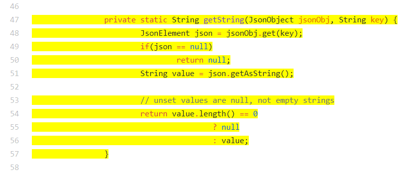

I figured out how to highlight the entire method in GitHub, by implementing the stack solution I had thought of last week:

It was easy to program, thankfully, except I wasted around half an hour because of an off-by-one error -- I didn't push the first curly brace onto the stack, so everything from the method declaration to the end of the file was highlighted because there was an uneven number of curly braces. Oops.
After that was finished, I had to integrate the backend. Tianyi had suggested working from the front to back, and that was really helpful because I could easily test my code along the way, and integrating was just a matter of removing hard-coded parts and replacing them with dynamic code.
But, in order to get the backend working, I needed to populate the database with GitHub links. Each pattern theoretically gets three GitHub links mapped to it. Tianyi had a file that was the result of GitHub pattern mining, so I had to write a program that would extract the links from the file and insert them into the database. This was easier said than done because there were patterns in the file that weren't in the database and vice versa, and not all of the links were still working. So, I had to write a one-time program that would create a "links" column in the database and then walk through the files and check if a specific API+method was present in the database. The folders were set up in an easy-to-parse manner: the folder name was APIname.methodname, and inside was a pattern.txt that listed the patterns found for that API call, and an indefinite number of sample-num.txts that were numbered in the order of the patterns in pattern.txt. So there was just a lot of file reading/parsing to do, as well as testing URLs so that the three I put into the database would be working ones. I also had to include the method in the example that needed to be highlighted, which isn't the same as the API call. I used a StringBuilder to put all of this information into one string, delimited by "\\", since that wouldn't appear in a URL.
Since this program would just be run once, to populate the database with links, I didn't feel as much pressure to be concerned about its efficiency, which helped me get it done more quickly -- it was a lot of walk-through loops and String operations, so it took several seconds to run.
After I did that, however, the rest of the integration was a simple matter of changing a database query to include links, and doing the same for the JSON message the server sends back to the plug-in. And I was done!
The last thing I have to do is write my final report, which is a demo paper for the Maple user interface. I finished a rough draft yesterday, and Tianyi is giving me feedback this weekend, and then I'll meet with Miryung and Tianyi one last time on Monday (I leave LA on Tuesday). Once it's acceptable I'll add it to this project site.
Looking back at this summer, I feel very satisfied with what I've accomplished. It was great to be able to learn new concepts while also refining skills I already had, and now I feel a lot more comfortable with web development, as well as my ability to learn on the job. I'm also definitely interested in going to graduate school in the future!